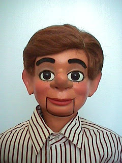
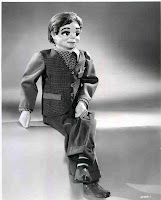
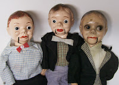

Willy/Dan dolls
11/6/2009
{kind=link}

From Glen Rappold:
Looks like what you have there (see photo lower left) are 3 variations of the Willy Talk/ Dummy Dan vent dolls made from around 1925- the 1940's. Those dolls were actually available in 3 sizes...31", 22", and 18". there were actually two large toy companies making vent dolls during that time- and apparently both companies called their figures by the same or similar names. If memory serves me correctly, the Dummy Dan's were made by the Ralph Freundlich company of New York City, and the large Willy Talks by Regal.
These Willy/Dan dolls were actually the dolls Fred and Madeleine Maher upgraded to create many of the figures in their first catalog. Later, the catalog was upgraded to include the figures Dale, Buster, Bill, Linda, etc.- all of which were upgraded versions of the large model in their original incarnations. In fact, I owned one of those original Buster's for a time, and under the wig you could still see the original molded hair. Madeleine (or Fred) would build up the features (noses, cheeks, etc, with plastic wood to create the characters. Clinton, if I were you, I'd go back to the very original Maher catalog, and then the later version with Buster, and
{kind=link}

re-create a couple of those early characters- Maher fans like me would LOVE to see them!* * * * * *
From Clinton: Russell was my personal favorite of the Maher figures made from the Willie/Dan dolls. If I could go back 20 years knowing what I do now, I might try to recreate that f
{kind=link}

igure. But now? I'm afraid there's too much sawdust on the floor....And since these little fellas (left) are the smallest 18" size, they're too small for any practical upgrade. Even their restoration is questionable at this point.
PS: My personal thanks to all of you who responded to my request for factual details on these dolls. I have saved all your emails and photos to my files for future reference.